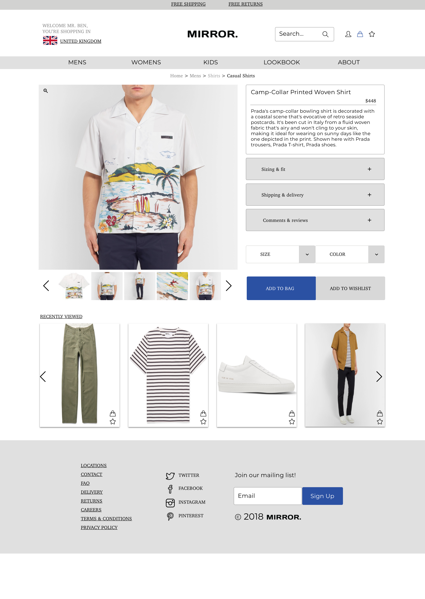
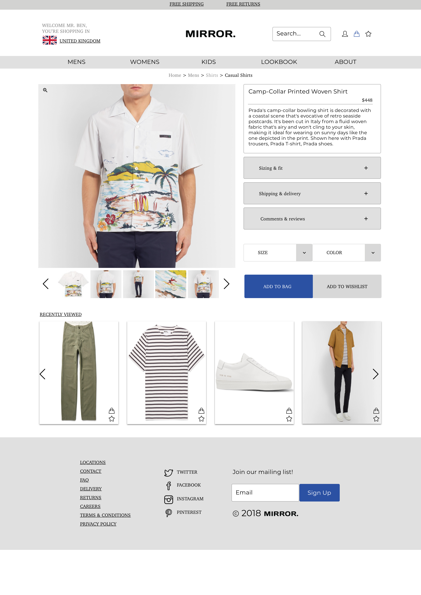

Ben Quartermaine is a frontend developer and designer from Australia, currently based between Shanghai and Melbourne. Most recently he served as lead product designer for the Mandala Group.
Ben lived in Shanghai for over 4 years where he started out writing content and directing livestream productions for a Chinese millenial platform, Benku8.
He got his start in design at Mandala Group which leverages existing technology to help the underserved lift themselves out of poverty. He lead the product design team which researched extensively throughout rural China.
Most recently, Ben has developed his technical skills, undertaking Le Wagon's full-stack coding bootcamp in an effort to further bridge the communication gap between design and tech.
He's available for projects related to WeChat Mini Programs, User Experience design and Web App development.


 
